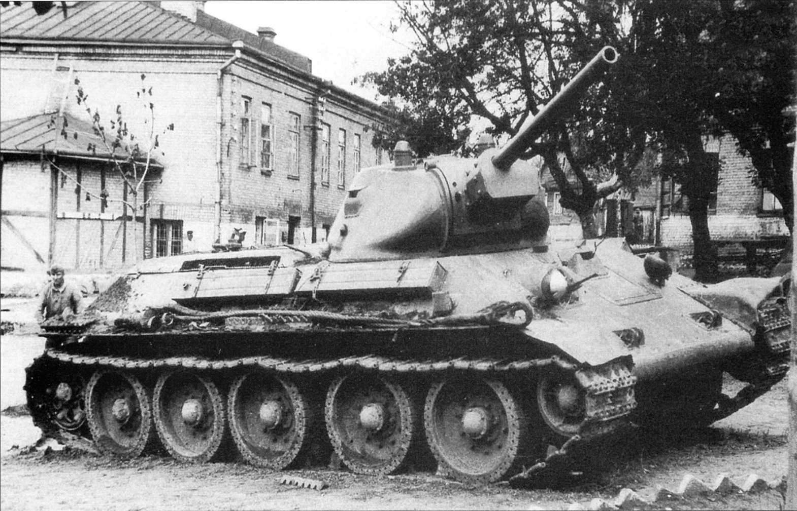
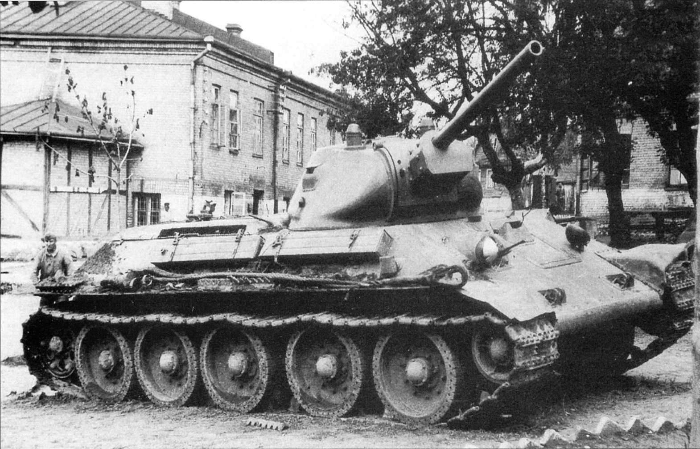

Любая война — мировая или локальная, давно завершившаяся или продолжающая уносить жизни людей сегодня – однозначное зло,
извечно преследующее человечество.
Каждая из них оставляет в истории след.
Парадоксально, но не всегда отрицательного характера.
В одних случаях — это скупые даты начала и конца события.
В других – название битв и сражений, оказавшихся решающими.
В-третьих, это наименования заслуженных частей и соединений, имена военачальников и рядовых бойцов, героически сражавшихся на поле брани.
Наконец – это легендарное оружие (трехлинейка Мосина, пулемет Максим, РСЗО «Катюша»).
История танка Т-34 позволила внести в список и эту боевую машину.
«Оружием победы» называли отдельные виды вооружения и боевой техники после Великой Отечественной войны.
Танк Т-34 одним из первых получил такую оценку.
И это за боевые действия. Но если познакомиться с историей его создания поближе, то звание «дважды победитель» тоже преувеличением не будет.
К середине 30-годов стало ясно, что развитие бронетанковой техники посредством бесконечных модификаций танков Т-26 и БТ-2,
построенных на базе английского Виккерса
и американского Кристи – путь неверный. Бесперспективными оказались и варианты создания многобашенных монстров с броней как у легких танков.Например, Т-35, выпущенных в количестве 61единицы, 59 из которых даже участвовали в первых боях в июне 1941 года, но,
к сожалению, были либо уничтожены,либо брошены экипажами.
1.Боевое примененение
Первые Т-34 стали поступать в войска в конце осени 1940 года.
К 22 июня 1941 было выпущено 1066 танков Т-34,
в приграничных военныхокругах в составе механизированных корпусов (мк) насчитывалось 967 Т-34в том числе в Прибалтийском военном округе — 50 шт., в Западном Особом военном округе — 266 шт. и в Киевском Особом военном округе — 494 шт.).Удельный вес танков новых типов (Т-34, КВ и Т-40 (танк)) в войсках был невелик, основу танкового парка РККА перед войной составляли
легкобронированные Т-26 и БТ.
С первых же дней войны Т-34 приняли самое активное участие в боевых действиях.
В ряде случаев Т-34 добивались успеха,
но в целом их использование, как и танков других типов, в ходе приграничного сражения оказалось малоудачным — большинство танков было быстропотеряно, при этом наступление
немецких войск остановить не удалось.
Достаточно характерна судьба машин 15мк, имевшего на 22 июня 1941 года 72 Т-34 и 64 КВ.
За месяц боёв почти все танки мехкорпуса были потеряны.
В качестве причин малой эффективности и высоких потерь Т-34 в этот
период называется слабая освоенность новыхтанков личным составом, тактически неграмотное использование танков, дефицит бронебойных снарядов, конструктивные недостатки слабо отработанных
в серийном производстве машин, недостаток ремонтно-эвакуационных средств и быстрое перемещение линии фронта, что заставляло бросать вышедшие
из строя, но ремонтопригодные танки.
 

Михаи́л Ильи́ч Ко́шкин 3 декабря 1898 - 26 сентября 1940.
Семья жила бедно, земли было мало, и отец вынужден был заниматься отхожими промыслами. В 1905 году, работая на лесозаготовках,
он надорвался и умер, оставив жену и троих малолетних детей.Из-за бедности мать Михаила идёт батрачить,а он в 10 лет уезжает
на заработки в Москву.
В начале 1917 года перед февральской революцией,Михаила призвали в армию.15 апреля 1918 года добровольцем ушёл в сформированный
в Москве эелезнодорожный отряд РККА.
В январе 1937 года Кошкин впервые без сопровождающих появился в КБ (бюро 190). Одет был просто.
Во второй половине дня в сопровождении А. О. Фирсова и Н. А. Кучеренко сделал обход
Предстояло правильно сориентировать коллектив КБ, организовать его работу,
вдохнуть веру в достижимость поставленной первоочередной цели, заразить своей работоспособностью.
10 февраля 1940 года были изготовлены два первых Т-34 и начаты их испытания. На 17 марта в Москве был назначен показ танков членам правительства.
С этой целью был организован танкопробег Харьков — Москва. Учитывая важность мероприятия,
Кошкин сам отправился на новых машинах как ответственный представитель завода.
В марте 1940 года Кошкин принял личное участие в проведении войсковых испытаний двух опытных танков Т-34 (А-34)
с совершением пробега Харьков — Москва и обратно.
17 марта 1940 года Кошкин участвовал в показе своих машин Т-34 членам правительства в Кремле.
Показ на Ивановской площади Кремля в присутствии всего высшего руководства СССР
и всесторонние стендовые и
ходовые испытания на танковом полигоне окончательно решили судьбу танка.
Т-34 был рекомендован для немедленной постановки на производство.
31 марта 1940 года Кошкин представил опытные танки Наркому среднего машиностроения и
Наркому обороны, которые рекомендовали немедленно поставить танк Т-34 на производство на заводах № 183 и СТЗ.
Причина смерти-пневмония